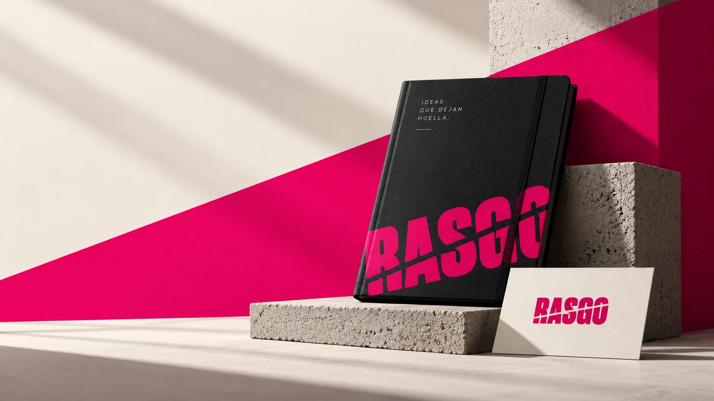
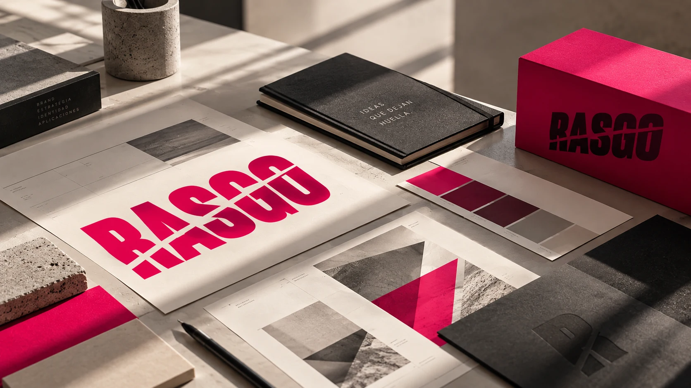
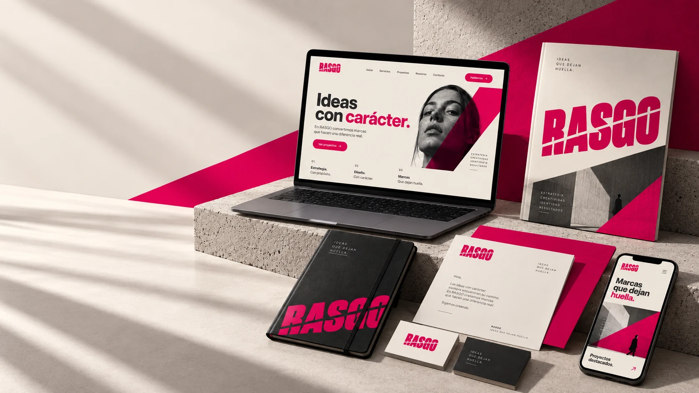

Cercanía
Entendemos antes de diseñar.
Rasgo · Estudio de identidad visual
Convertimos lo que hace única a tu marca en una identidad visual clara, memorable y coherente.
Rasgo nace de identificar aquello que vuelve única a cada marca y convertirlo en una expresión visual propia.
Más que decorar, buscamos revelar. Cada decisión responde a una intención: diferenciar, ordenar y dar presencia.

Entendemos antes de diseñar.
Buscamos lo que hace distinta a cada marca.
Construimos sistemas visuales consistentes.
No empezamos por elegir una forma bonita. Empezamos por descubrir qué debe comunicar la marca y qué necesita conservar cuando cambia de formato.

Contexto, intención y personalidad antes de tocar la forma.
Encontrar el rasgo que puede convertirse en una dirección visual propia.
Transformar la idea en un sistema que siga funcionando en cada aplicación.
La identidad debe conservar su personalidad en distintos soportes. Por eso trabajamos la marca como un sistema, no como una pieza aislada.
Concepto, logotipo, color, tipografía y lenguaje gráfico.
↗Criterios para que la marca se vea clara, propia y consistente.
↗Piezas digitales alineadas con el sistema y la personalidad de marca.
↗Contenido, papelería y recursos que llevan la identidad a contextos reales.
↗Una identidad sólida puede pasar de una pantalla a una pieza impresa sin perderse. La consistencia vive en las decisiones, no en repetir la misma composición.

Rasgo / Idea central
Lo distinto merece verse.
Cuéntanos qué quieres construir. Empezamos por entenderlo y después le damos una forma capaz de representarlo.
Escríbenos por Facebook